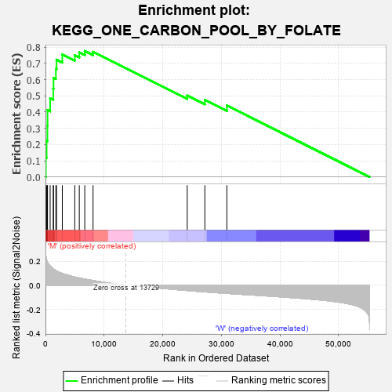
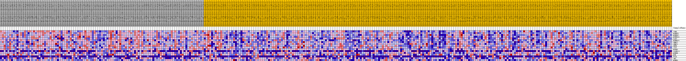
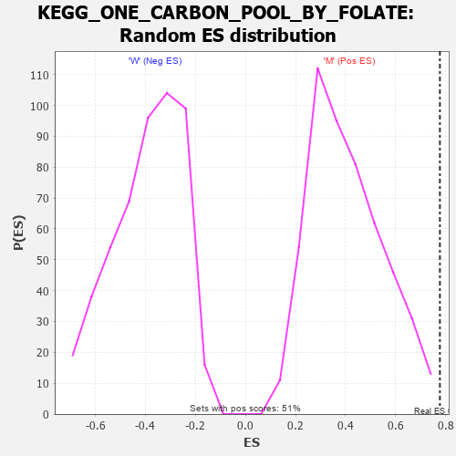

| Dataset | MUC16.MUC16.cls#M_versus_W.MUC16.cls#M_versus_W_repos |
| Phenotype | MUC16.cls#M_versus_W_repos |
| Upregulated in class | M |
| GeneSet | KEGG_ONE_CARBON_POOL_BY_FOLATE |
| Enrichment Score (ES) | 0.77663964 |
| Normalized Enrichment Score (NES) | 1.9159636 |
| Nominal p-value | 0.001980198 |
| FDR q-value | 0.041690826 |
| FWER p-Value | 0.139 |

| PROBE | DESCRIPTION (from dataset) | GENE SYMBOL | GENE_TITLE | RANK IN GENE LIST | RANK METRIC SCORE | RUNNING ES | CORE ENRICHMENT | |
|---|---|---|---|---|---|---|---|---|
| 1 | TYMS | na | 65 | 0.242 | 0.1200 | Yes | ||
| 2 | MTHFD1 | na | 193 | 0.210 | 0.2228 | Yes | ||
| 3 | MTHFD2 | na | 329 | 0.194 | 0.3174 | Yes | ||
| 4 | MTHFD1L | na | 351 | 0.192 | 0.4130 | Yes | ||
| 5 | GART | na | 799 | 0.161 | 0.4853 | Yes | ||
| 6 | MTHFD2L | na | 1327 | 0.137 | 0.5444 | Yes | ||
| 7 | SHMT2 | na | 1375 | 0.135 | 0.6112 | Yes | ||
| 8 | SHMT1 | na | 1773 | 0.123 | 0.6655 | Yes | ||
| 9 | DHFR | na | 1886 | 0.119 | 0.7232 | Yes | ||
| 10 | ATIC | na | 2873 | 0.099 | 0.7548 | Yes | ||
| 11 | MTFMT | na | 4997 | 0.069 | 0.7510 | Yes | ||
| 12 | ALDH1L1 | na | 5767 | 0.061 | 0.7677 | Yes | ||
| 13 | MTHFR | na | 6700 | 0.052 | 0.7766 | Yes | ||
| 14 | MTR | na | 8112 | 0.040 | 0.7713 | No | ||
| 15 | FTCD | na | 24175 | -0.043 | 0.5021 | No | ||
| 16 | AMT | na | 27182 | -0.054 | 0.4748 | No | ||
| 17 | MTHFS | na | 30938 | -0.067 | 0.4403 | No |

